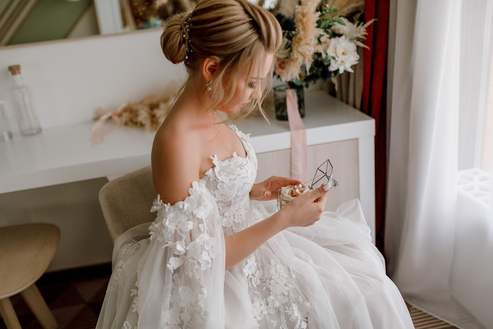

«WENDY»: НАША ИСТОРИЯ
Салон-магазин свадебных платьев «Wendy» открылся в 2000 году в г.
Москва и довольно быстро приобрел постоянных клиентов. Мы знаем, что
люди приходят к нам снова и снова, потому что им нравится соотношение
цены и качества наших вещей. Кроме того, мы стремимся радовать
клиентов высоким уровнем обслуживания и делаем все, чтобы покупать у
нас было приятнее, чем где-либо еще.
Предмет нашей гордости — эксклюзивные коллекции, которые мы
представляем каждый сезон. Ознакомьтесь с нашим ассортиментом,
примерьте то, что вам нравится, и вы поймете, почему многие
предпочитают совершать покупки в магазине «Wendy».
